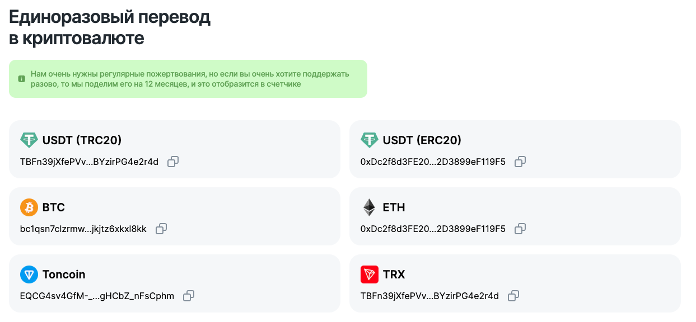
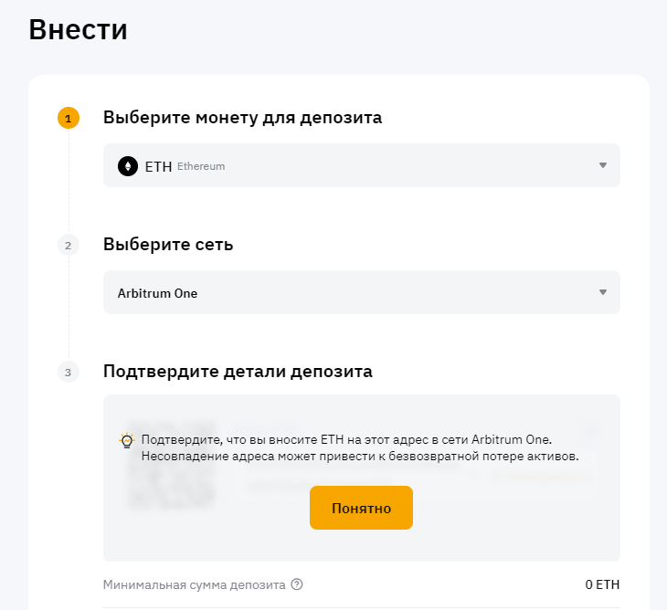
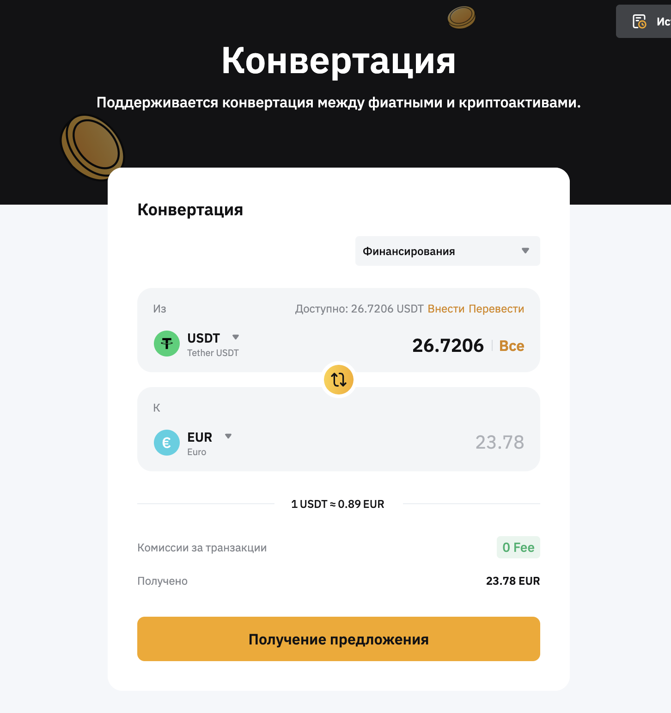

Crypto
- coinmarketcap.com - мониторинг курса токенов
- chainlist.org - мониторинг блокчейн сетей
- bybit.com - крипто-биржа bybit
- Metamask - Metamask-кошелек
- Trust Wallet - Trustwallet-кошелек
- Telegram wallet - Telegram-wallet
Криптовалюта
Криптовалюта - цифровая незримая валюта, существующая только в виде кода в сети интернет. Нет единого центра, который бы отвечал за криптовалюту, это под-сеть, которую поддерживают майнеры, внутри интернета. В 2009 году появился биткойн. В 2017 отмечен резкий рост заинтересованности людей криптовалютой, в связи в ростом стоимости биткойна.
Преимущества криптовалюты
- Возможность передавать криптовалюту в любую точку мира за минимальную / нулевую комиссию.
- Доступность транзакций осуществляется 24/7.
- Анонимность. При переводе с одного кошелька на другой известен только номер счета.
- Быстродействиe. Транзакции осуществляются мнгновенно.
- Глобальная сеть блокчейна уже настолько мощная, что превышает мощность любого супер-компьютера в мире.
- Смарт-контракты.
- Нет посредников. P2P.
- Нет политического и государственного надзора.
- Криптовалюта как средство сбережения
- Криптобиржа как способ заработка
Варианты операций с криптовалютой
- Простой перевод крипты с кошелька на кошелек. Кошелек --> Кошелек. Взымается небольшая комиссия за перевод (самая анонимная).
- Покупка криптовылюты на бирже. ByBit --> P2P -> Активы
- Продажа крипты на бирже. ByBit --> P2P -> Вывод на карту.
- Пополнение своего счета на бирже. ByBit --> Активы --> Внести. Можно пополнить с любого кошелька
- Конвертация криптовалюты в кошельке или на бирже.
Блокчейн
Блокчейн - технология открытой БД, используемая для хранения транзакций криптовалюты. По сути распределенная БД в виде огромной таблицы (очень много гигабайт), в которой храняться все данные о транзакциях, счетах, токенах, событиях. Состоит из последовательно идущих за собой блоков. Её нельзя подменить или перезаписать. Как супер-надежная банковская сеть. Используются закрытые ключи для просмотра личных данных. Эту сеть поддерживают майнеры по всему миру. Блок в себе хранит хэш (id1) предыдущего блока, хэш (id2) данного блока (отправитель, получатель, кол-во токенов) и данные блока.
- При изменении данных блока будет изменен его хэш, что в конечном итоге запустит цепную реакцию несоответствий всех хэшей предыдущих блоков во всех блоках цепи - это и есть главная особенность блокчейна - защита от фальсификаций.
- P2P-сеть. Так как блокчей децентрализован, то проверку на валидность блоков осущесвляют сразу несколько участников сети.
- Создание одного нового блока занимает около 10 миниут, как доп. мера безопасности.
Блокчейн сети
Блокчейн сети - различные виды блокчейнов. С появлением новых видов токенов стали появляться новые сети для возможности конкурирования друг с другом. У каждой сети есть свой нативный токен. Но эти сети, как правило, также поддерживают другие виды токенов. При переводе криптовалюты с одного кошелька на другой нужно учитывать, чтобы кошелек поддерживал выбранную сеть при отправке, иначе средства могут пропасть, так как у криптовалюты нет возвратных транзакций. Каждая сеть имеет свои комиссии при транзакциях, у кого-то они больше, у кого-то меньше.
Наиболее известные блокчейн-сети:
- Bitcoin
- BNB Smart Chain Mainnet (BNB)
- Etherium
- Arbitrum One, Ethereum Mainnet, Base, Blast, Linea, OP Mainnet (ETH)
- Solana
- Polygon Mainnet (MATIC)
- Аvalanche C-Chain (AVAX)
У каждой сети есть свой нативный токен, тот токен под который эта сеть была заточена. Отправлять или конвертировать криптовалюту в рамках одной сети, как правило, можно достаточно быстро и с минимальной комиссией. Если нужен перевод криптовалюты из одной сети в другую, то можно воспользоваться так называемымы "мостами", но за такой перевод обычно взымается большая комиссия.
Майнинг
Майнинг - 2 задачи: подтверждение транзакций и создание новых блоков в блокчейне. Каждай транзакция требует нескольких подтверждений сети. Майнеры как раз подтверждают эти транзакции. За что они получают награду в виде комиссии криптовалютой. Майнеры объединяются в POOL для большей эффективности.
Токены (коины)
Токены - различные виды криптовалюты. Различные токены имеют различный курс, долларовый эквивалент, и этот курс постоянно меняется как на обычных акционных биржах.
Наиболее известные токены:
- BTC (биткоин) - главный коин, все остальные альткоины
- ETH (эфириуи)
- USDC/USDT/EUR (staible coins)
- BNB (binance coin)
- SOL (Solana)
- DOGE (Dogecoin)
- LTC (Lightcoin). Видов токенов уже очень много.
Устоявшиеся вида токенов, как правило, есть на всех крипто-биржах (так как компнания, владеющая этим токенов вышла на ICO, аналог IPO в акциях). С токенами, которые отсутствуют на крипто-биржах лучше не связываться.
Биткойн "майнится" пропорционально производительности железа компьютера, его может быть в сети не более 21 млн.
Staible coins
USDC/USDT/EUR - это токены со стабильной волатильностью, так как эти токены привязаны к реальной валюте. Удобно хранить сбережения на длительные сроки, соврешать платежи и принимать\совершать переводы.
NFT
NFT - токены в виде картинок, гифок, музыки и т. д. Не повторяются. Их также можно передавать, продавать или меняться.
Крипто-кошелеки
Крипто-кошелеки - сервисы для хранения криптовалюты. Бывают горячие и холодные.
Seed-phrase - фраза из 8-12 слов, как пароль от кошелька.
Содержит - Публичный адрес счета, счет которым можно делиться, чтобы можно было получить криптовалюту (как номер банковской карты в мире криптовалюты).
Известные крипто-кошельки:
- Metamask - кошелек, доступный в виде мобильного приложения или браузерного плагина.
- Trust Wallet
- Coinbase Wallet
Операции внутри крипто-кошельков:
- Отправление / получение
- Swop - процесс конвертации криптовалюты из одного типа токенов в другой (в рамках одной сети)
- Bridge - процесс передачи токенов из одной сети в другую
Адреса криптокошельков выглядят так. На изображении видно, что один и тот же вид токена (USDT) может быть в разных сетях (TRC20 и ERC20):
Metamask
- Купить - можно покупать крипту в самом кошельке (нужно привязать банковскую карту)
- Отправить - перевести токены на другой кошелек или биржу
- Своп - конвертация
- Мост - перевод токенов из одной сети в другую
- Portfolio - переход страницу портфолио
Trust wallet
У каждой сети будет свой отдельный адрес.

Крипто-биржи
Крипто-биржи и крипто-обменники - сервисы по торговле и обмену криптовалюты. Курсы криптовалют очень валантильны, поэтому можно на них также зарабатывать.
- exnode.org - Мониторинг криптобирж
- ByBit - Доступный в РФ аналог Binance
- Binance - Самый популярный в мире (но не работают P2P в РФ).
- Coinbase exchange
- OKX
- Insigth - Крипто-обменник;
По сути все активы на криптобирже храняться на вашем счете как и на обычном крипто-кошельке. Можно также конвертировать активы из одного види токена в другой в рамках одной биржи бех комиссии.
P2P
P2P-торговля - "person to person" персональная покупка/продажа криптовалюты на криптобирже с выводом средств на банковские карты. Как правила, за P2P-транзакции биржа не взымает комиссию.
Short / Long
Виды стратегии при купле-продаже (спекуляции) токенов. У популярных токенов волатильность более стабильная, поэтому на таких токенах удобно получать прибыль при хранении вдолгую (long), а какие-ниб непопулярные токены могут увеличмваться в несколько раз (делать много иксов) в течении нескольких дней/недель (short), и на этом коротком отрезке на них можно получить хорошую прибыль, но есть большие риски, так как эти токены могут рухнуть также быстро как они и взлетели, важно отслеживать их тенденции.
Лонг-стратегия: покупать токены, у которых есть длительная тенденция на рост. Они могут "расти" медленно, но на дистанции можно сделать несколько иксов. Риски не такие большие.
Шорт-стратегия: в течение кокого-ниб короткого периода покупать такие токены на подъеме и продавать их на пике или на начале спуска.
Риски хранения активов на бирже
Крипто-биржи централизованы и непрозрачны, это их главный минус, поэтому многие советуют "хранить в долгую" свою криптоволюту на кошельках, а не на биржах, чтобы не потерять накопления при закрытии биржы, если таковая случиться.
Как подключить блокчейн к своему проекту
TODO
Клон Binance доступный в РФ.
ByBit - Залогиниться через Google + Google 2FA
Для прохождения верификации нужно указать свой email, телефон и заполнить паспортные данные.
P2P-покупка/продажа криптовалюты
- Хэдер --> Купить криптовалюту --> P2P-торговля
- Выбираем покупку или продажу
- Указываем токен и сумму
- Переходим на ордер и производим оплату по указанным реквизитам и подтверждаем оплату.
- В чат с продавцом отправляем скриншот перевода и ждем когда продавец переведет токены.
- Если монеты пришли, то подтверждаем получение
После подтверждения оплаты, монеты всё-равно будут отправлены системой, даже если продавец не подтвердит перевод. Посмотреть все текущие ордеры можно в разделе "Ордеры". Хэдер --> Ордеры --> Купить криптовалюту --> P2P.
Внести криптовалюту на баланс со стороннего крипто-кошелька
- Кнопка "ВНЕСТИ" в хэдере
- Выбрать токен
- Выбрать сеть
- Далее будет сгенерирован адрес счёта, на него и нужно будет переводить
ВАЖНО!: токен и сеть на стороннем кошельке должны совпадать
Вывeсти криптовалюту на сторонний крипто-кошелёк
- Кнопка "Активы" --> Вывести
- Вставить адрес кошелька, на который нужно вывести
- Выбрать сеть
- Ввести сумму для вывода, будет взыматься комиссия за вывод (26 USDT, 1 USDT комиссия)
Ковертация токенов
Можно конвертировать без комиссии токены из своих активов в любой вид токенов, представленных на бирже.
Активы --> Финансирования --> Конвертация
Перевод криптовалюты с одного кошелька на другой
Должны совподать сети. Можно переводить например с Metamask на Trust wallet. При этом будет взыматься небольшая комиссия (в пределах 1-го процента).
Онлайн-трейдинг
TODO - покупка/продажа крипты как акции.